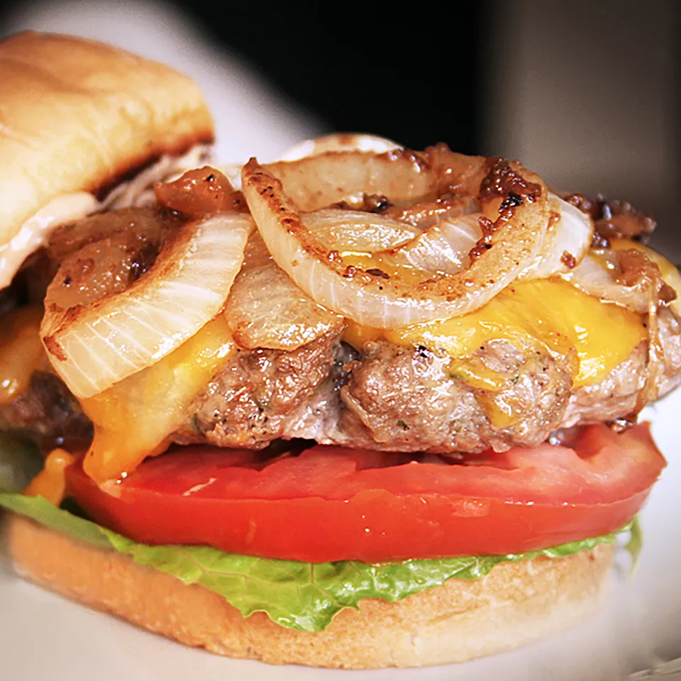

Best Hamburger Ever

The best burger recipe for summertime grilling! This juicy burger is jam-packed with all kinds of stuff and has no tasteless bread crumbs
Ingredients
- 1 ½ pounds lean ground beef
- ½ onion, finely chopped
- ½ cup shredded Colby Jack or Cheddar
- 1 egg
- 1 (1 ounce) envelope dry onion soup mix
- 1 teaspoon Worcestershire sauce
Steps
- Preheat an outdoor grill for high heat and lightly oil the grate.
- Meanwhile, Use your hands to form the mixture into 4 patties.
- Cook patties on the preheated grill until no longer pink in the center and the juices run clear, about 4 to 5 minutes per side.